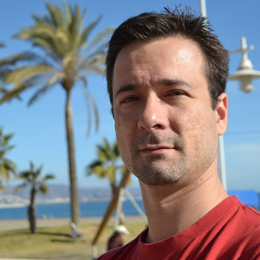

Hola, soy Yury
Un apasionado de las nuevas tecnologías, tengo un conjunto de habilidades muy particular; habilidades que he adquirido a lo largo de mi prolongada carrera profesional. Habilidades que me convierten en una persona que no teme a los retos y con la curiosidad de aprender nuevos caminos.
Un poco más de mi